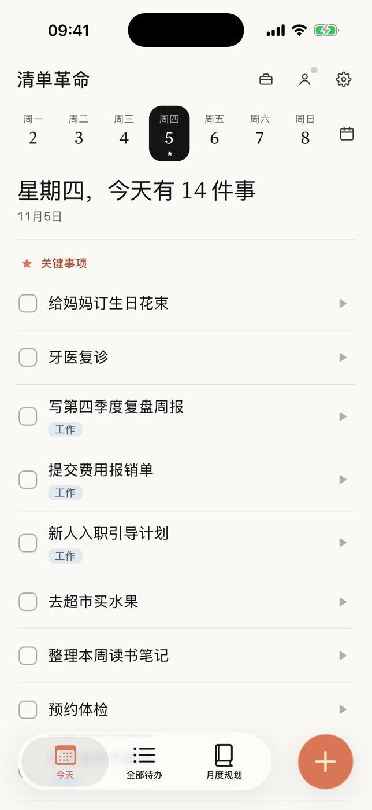

名字来自阿图·葛文德的《清单革命》。
再熟练的人也会忘事，一张写下来的清单，
能让我们把注意力留给真正重要的事。
英文名 Manifest：一份货单，一张名录，也是“让事情变得清楚”。
一打开，就知道今天要做什么。
首页只有今天：过期没做完的、标了关键的、普通的，各归其位。做完的事轻轻划掉，再安静地沉到「已完成」里。
- 关键事项单独置顶，日历上用小圆点标出来
- 工作与生活分开标记，下班后可以一键隐藏工作
- 任务可以跨好几天，也可以拆成几个小步骤
- 给事情估个时长，开始做时计时，忘了停也会提醒你
想到什么，说一句就好。
把脑子里的一团事写成一句话，清单革命会把它拆成几条待办：日期、时长、工作还是生活、是不是关键。先给你看草稿，确认了才加进清单。
- “周五”“下周一”“后天”都能认对
- 只发送这一句话，你已有的待办不会离开本机
- 模型密钥只存在这台设备的钥匙串里
不用切窗口，今天就在桌面一角。
一个小小的浮层停在桌面上，只放今天该做和已经过期的事。不需要时收成一颗小球，按 ⌃⌥Space 随时唤出来记一笔。
- 点圆圈完成，点文字改名，双击打开完整编辑
- 高度跟着待办多少自动伸缩
- 只留在当前桌面，不打扰全屏的应用
小处也用了心。
全部待办 · 时间线
所有事情按日期排成一条线。拖动中间改日期，拖两端改起止，松手后 5 秒内可以撤销。
月度规划
每个月一页记事纸，打开就能写，自动保存。可以加粗、用五种颜色划重点、写圆点列表。
多设备同步
用 Google 账号登录，Mac、iPhone、iPad 看到同一份清单。断网照常用，联网后自动补上。
键盘就能做完
↑↓ 选择，空格勾掉，↩ 编辑，⌘Z 撤销刚才的改动；⌘1 到 ⌘3 切换页面，⌘N 新建。
手感
勾选、补位、切页都有短而准的动效，不拖沓也不生硬。系统开启「减少动态效果」时会自动收敛。
给脚本的入口
用 qingdan:// 链接添加、修改、完成待办，方便接上快捷指令和你自己的自动化。
日期
今天明天周五下周一11/5
预估时长
30m1h45min2hrs
工作 / 生活
#工作#生活
关键事项
#关键!
快速添加时可以直接写这些简写，中英文都认。
桌前和路上，是同一张清单。
三个平台共用同一套界面和动效：在 Mac 上计划一周，在手机上勾掉刚做完的事。
Mac主窗口、桌面浮层、菜单栏和全局快捷键。macOS 13 及以上，Apple 芯片。
iPhone即将推出玻璃质感的底部标签栏，手指拖动的面板，还有桌面小组件。
iPad即将推出侧栏加日历的宽屏布局，横竖屏都好用。

你的清单，只属于你。
本机优先
不登录也能完整使用，数据存在你自己的 Mac 上，每次保存都是完整的原子写入。
同步可选
登录后才会同步。第一次同步前会告诉你两边各有多少条，并先在本机备份一份。
没有广告和追踪
没有广告，也不做行为分析。一句话记待办只发送你写的那一句。
打开时提示“无法验证开发者”，怎么办？
早期版本还没有经过 Apple 公证。第一次打开时：
- 把清单革命拖进“应用程序”文件夹；
- 在“应用程序”里按住 Control 点按它，选「打开」，再点「打开」；
- 如果仍被拦下，前往「系统设置 → 隐私与安全性」，在底部点「仍要打开」。
之后就能正常双击打开了。
需要注册账号吗？
不需要。不登录也能完整使用，数据只保存在本机。想在多台设备间同步时，再用 Google 账号登录。
一句话记待办需要付费吗？
这项功能用的是 DeepSeek 模型，需要你在设置里填入自己的 API 密钥，按 DeepSeek 的价格计费，一句话的花费通常不到一分钱。不填密钥时，其他功能都不受影响。
支持 Intel 芯片的 Mac 吗？
目前的安装包只支持 Apple 芯片（M1 及更新）。如果你用的是 Intel Mac，欢迎告诉我们。
iPhone 和 iPad 版什么时候上线？
已经在作者自己的手机上每天使用，正在准备上架 App Store。